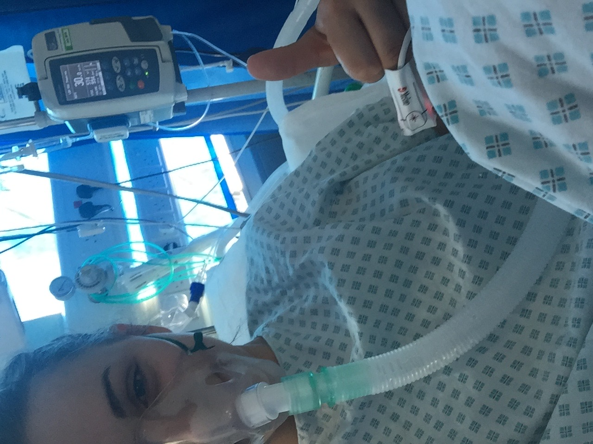

Kiss My Assthma
Blogs
Do I have to!?
With the new rule coming in about wearing a mask in public areas now in place. Lots of people have something to say about it. Everybody should be wearing a mask, including those with Asthma. Yes it may feel a bit stuffy on your face, but with well ventilated masks, breathing will not be a problem...

What is Xolair?
Xolair is an FDA-approved drug to help patients who have asthma. For me this drug has changed my life, it has massively reduced my symptoms. Xolair is used to treat allergic asthma, it is a pre-filled injection sringe. The dose changes per patient, it can range from one to four injections between two to four weeks.

Top 5 Creams
Asthma and Eczema normally come hand in hand, so if you have asthma, chances are you may have a form of eczema at some point. Eczema is a completely manageable skin condition where there are small dry, lesions on the skin. Personally, I have eczema on my trunk, neck arms and legs, and I have used many different creams to help and offer moisturiser and a soother.